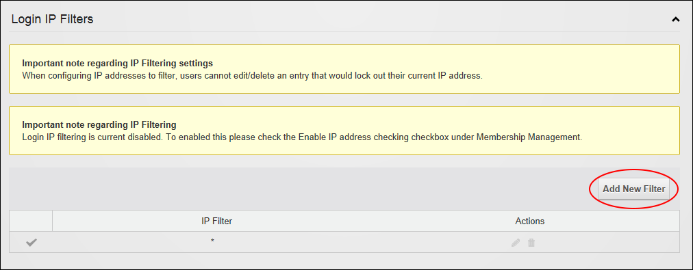
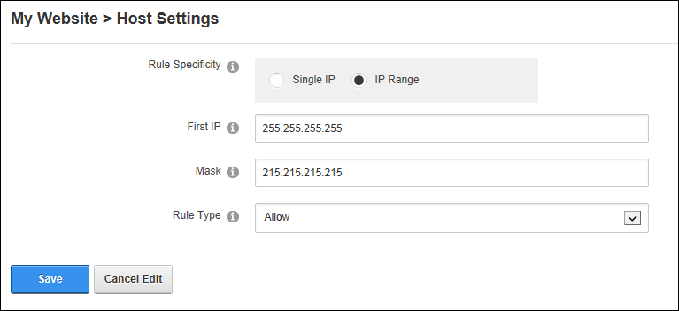

About Login Filters
How to configure the Host Settings for Login Filters. Using login filters you can control which IP Addresses are allowed to login to your website. You can either Allow or Deny a single IP address or a range of addresses. You need to have selected the Enable IP address checking check box to be able to add new filters, See "Membership Management"
Adding a Login Filter
- Navigate to Host >
 Host Settings.
Host Settings.
- Select the Advanced Settings tab.
- Expand the Login IP Filters section.
- Click the Add New Filter button.

- At Rule Specificity, select from these options:
- Single IP, this is the default option.
- In the First IP text box, enter the single IP to filter.
- IP Range
- In the First IP text box, enter the first IP to be used with the subnet mask to calculate a range of IP addresses.
- In the Mask text box, enter the subnet mask that will be combined with the first IP address to calculate a range of IP addresses for filtering.
- At Rule Type, choose whether to Allow users within that IP range to login or Deny login. Using Deny is a good way to restrict access to hackers.

- Click the Save button.
Editing or Deleting a Login Filter
How to edit or delete an existing login filter. Note:A rule that bans your current IP cannot be deleted.
- Navigate to Host > Host Settings.
- Select the Advanced Settings tab.
- Expand the Login IP Filters section.
- Click the Edit
 or the Delete
or the Delete  button beside the login filter to be edited or deleted.
button beside the login filter to be edited or deleted.